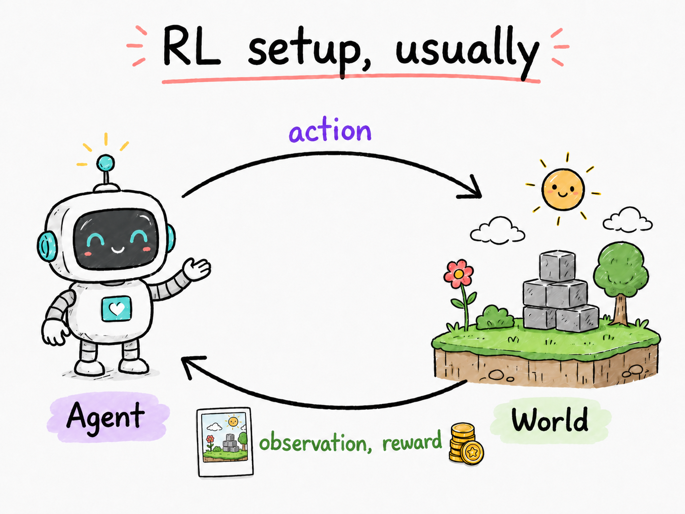
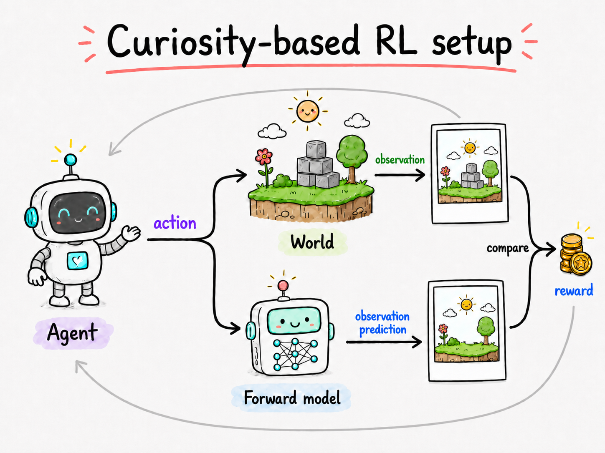
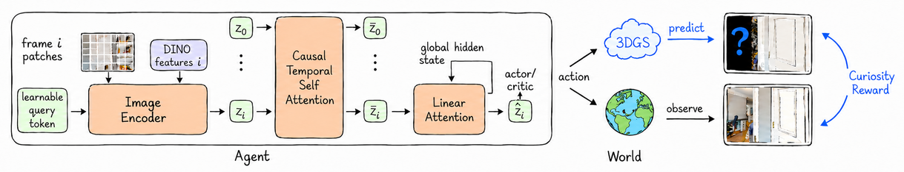

Remember to be Curious: Episodic Context and Persistent Worlds for 3D Exploration
What is curiosity?

In reinforcement learning, an agent acts in the world, and the world responds: the state changes, the agent receives a new observation, and, if the outcome helps the agent accomplish its goal, the world may also provide a reward.
But in many tasks, defining this reward is not straightforward, and even when a reward exists, the agent may rarely encounter it, a problem known as sparse rewards. This is where curiosity enters the scene. Think of a toddler in a playground: no one explicitly rewards them for figuring out how a toy works, yet they keep poking, turning, stacking, and exploring. What drives them is their own curiosity about how things behave and what else might be around them. This is the intuition behind curiosity-driven exploration [1], [2].

In this framework, curiosity is tied to learning how the world changes in response to the agent's actions. The agent maintains a model that tries to predict what will happen next. When the real world reacts in an unexpected way, the model is surprised, and that surprise becomes an intrinsic reward. In other words, the agent is rewarded for discovering something it does not yet understand.
This intrinsic reward encourages the agent to seek out novel parts of the world and gradually complete its internal model of how the environment works. To make this possible, curiosity-based agents include an additional component called a forward model, whose job is to learn the dynamics of the world.
Why be curious in 3D?
We live in a 3D world, and one of the first things we are curious about is our surroundings. It is what we do when we arrive at a new house or hotel: we look around, check out the rooms, and see what amenities are there. Exploring also makes other things easier, like finding an apple in the kitchen, or tracking down that one family photo hanging somewhere in your parents' house. So it is only natural that our agents can explore the 3D world too!
And it is not only the real world we can explore. We show that a curious agent trained on real indoor scans can generalize to AI-generated worlds and explore an imaginary world too, like this spaceship from World Labs [3].
The forward model: persistent edition
In the original curiosity framework (ICM) [2], the forward model is trained together with the policy. As the agent explores, this model gradually learns how the world changes in response to the agent's actions and uses its prediction error as a curiosity reward. This makes curiosity tricky to apply in diverse, continuous 3D worlds. Learning an accurate world model is already hard [4], [5], and when the model is trained together with the policy, the reward keeps changing as the model changes between different episodes of exploration. This makes the curiosity signal non-stationary and unstable.
More importantly, the forward model learns slowly across training, not immediately within an episode. If the agent observes a place early in a rollout, that observation is not instantly written into the model. As a result, the model can keep being wrong about a state the agent has already visited, and the agent may return to the same non-novel places just to collect more prediction error as reward. This lack of persistence can collapse both the forward model and the policy.
Some approaches have considered "counting" how many times you have been to a specific state [6], [7], but in realistic 3D environments, the state is continuous and high-dimensional, so reducing it to a discrete count can throw away much of the structure of the world.
We instead use a persistent forward model for static scenes. The model acts as a memory that remains reliable throughout the episode and can immediately integrate new observations as the agent explores. We implement this memory with 3D Gaussian Splatting (3DGS) [8], updating the scene representation online as new views arrive.
The rendering error of each frame before that observation is integrated into 3DGS shows the novelty reward and guides the exploration policy. Importantly, the forward model is only used during training. At deployment time, it is discarded, and only the agent runs its learned exploration policy in a new scene.
Why not use video generative models (yet)?
Generative world models have made impressive progress. However, for exploration,
persistence is essential: once an area has been seen, the model should remember it
so the agent does not revisit it repeatedly. The model also needs to incorporate
new observations in a closed loop, updating itself at every step as the agent moves
through the world. While current models are improving quickly, we find that they are
not yet persistent in this sense, and they cannot easily integrate feedback from new
observations during exploration [4].
Agent's gotta remember too!
As we discussed above, the forward model is decoupled from the policy agent itself. It is used during training to provide a curiosity reward, but is usually discarded at deployment time. This means the agent (policy network) does not have access to the persistent memory stored in the forward model. To plan its actions well, the agent needs a memory of its own.
Previous approaches often give the agent only a weak recurrent memory or no explicit memory mechanism at all [2,9,10]. In 3D exploration, this can lead to degenerate policies where the agent falls into loops, repeatedly returning to rooms it has already visited because it does not remember being there before.
We address this by giving the agent access to the context of its own observations throughout the exploration episode. We design the agent as a causal attention transformer: the input is the sequence of RGB observations up to the current timestep, and the outputs are the action distribution and state value.
To keep the model efficient, we use sliding-window attention, which limits the cost of attending over long trajectories, but weakens the connection to distant history. Therefore, we augment every few attention layers with a linear attention layer, inspired by TTT-style memory [13], to keep global context available.

We train this agent end-to-end from RGB image inputs to a discrete distribution over actions, then deploy the learned policy in new scenes for exploration. Depth and camera pose are used only during training for the 3DGS reconstruction module, which keeps the reward computation fast enough for RL rollouts. Below, the same scene is explored effectively by our memory-equipped agent.
Maps are also cool but …
Some previous work [11,12] trains RL agents for exploration using a 2D map of the scene as input. This map is either built by a separate module, or obtained from depth sensing, as the agent explores. The agent's reward is then defined as the gain in coverage of this map. Although maps are useful persistent memories, map-based agents often over-prioritize floor coverage. In practice, this can lead to behavior where the agent spends too much time looking carefully at every corner and nook in a room, rather than moving on to discover new rooms. For methods that predict or complete the map, errors in the predicted map can also introduce noisy behavior into the policy. Finally, as we show in the next section, our model can be finetuned for downstream tasks that benefit from exploration because it relies on an implicit memory of the observed RGB sequence. Map-based methods, in contrast, are tied to a 2D abstraction that discards much of the scene semantics and 3D geometry, making adaptation to other tasks harder.
Select a method to read about it.
Exploration results on HM3D. 3D completeness is shown with 3D points from mesh surface (gray) marked seen (green) as soon as the agent looks at them (red beam).
| Method | requires | HM3D — Completeness % ↑ | Avg. dist. (m) ↓ | Gibson — Completeness % ↑ | Avg. dist. (m) ↓ | ||||
|---|---|---|---|---|---|---|---|---|---|
| depth? | @256 | @512 | @1024 | @1024 | @256 | @512 | @1024 | @1024 | |
| ANS-RGB [11] | ✗ | 45.28 | 54.68 | 65.39 | 0.41 | 55.41 | 64.20 | 73.14 | 0.30 |
| OccA-RGB [12] | ✗ | 47.67 | 58.32 | 68.86 | 0.33 | 57.33 | 67.35 | 77.93 | 0.16 |
| ANS-depth [11] | ✓ | 51.02 | 61.45 | 69.68 | 0.34 | 63.04 | 72.79 | 79.89 | 0.18 |
| OccA-RGBD [12] | ✓ | 52.71 | 64.91 | 74.62 | 0.18 | 63.06 | 72.96 | 81.23 | 0.14 |
| Ours | ✗ | 56.5 | 66.69 | 74.94 | 0.14 | 66.95 | 75.79 | 82.42 | 0.10 |
Completeness % and average distance of each surface point to the closest visited point, on HM3D and Gibson datasets, after 256, 512, and 1024 steps of exploration.
Pick the apple! Find the image!
Exploration is particularly useful for downstream tasks with sparse rewards. We show that we can finetune our exploration agent for a few episodes to learn to pick up apples:
or to fetch a user-specified image view in the scene:
For the image-goal task, the image condition is given as an extra context frame to the agent policy network, which attends to it together with all other frame tokens.
Let's analyze the memory
We ablate the importance of forward model persistence and agent memory in exploration. The visualization below shows exploration results for pipelines where either world persistence is ablated (top buttons) or agent memory is ablated (bottom buttons). The results show that world persistence is significantly important for learning an effective exploration policy. Without it, the agent tends to loop locally without moving farther into the scene.
Select a method to read about it.
Memory analysis visualization.
Completeness %@1024 ↑ — ablation of forward model persistence and agent memory on HM3D.
Citation
If you find this work useful, please cite:
References
- Jürgen Schmidhuber. A possibility for implementing curiosity and boredom in model-building neural controllers. In From Animals to Animats: Proceedings of the First International Conference on Simulation of Adaptive Behavior. MIT Press/Bradford Books, 1991.
- Deepak Pathak, Pulkit Agrawal, Alexei A. Efros, and Trevor Darrell. Curiosity-driven exploration by self-supervised prediction. In ICML, 2017.
- World Labs. Generating worlds. worldlabs.ai/blog/generating-worlds; worldlabs.ai/blog/spark-2.0, 2024.
- Robbyant Team and Zelin Gao et al. Advancing open-source world models. arXiv preprint arXiv:2601.20540, 2026. [arXiv]
- Tianchang Shen and Sherwin Bahmani et al. Lyra 2.0: Explorable generative 3D worlds. arXiv preprint arXiv:2604.13036, 2026. [arXiv]
- Adrià Puigdomènech Badia and Pablo Sprechmann et al. Never give up: Learning directed exploration strategies. In ICLR, 2020.
- Roberta Raileanu and Tim Rocktäschel. RIDE: Rewarding impact-driven exploration for procedurally-generated environments. In ICLR, 2020.
- Bernhard Kerbl, Georgios Kopanas, Thomas Leimkühler, and George Drettakis. 3D Gaussian splatting for real-time radiance field rendering. ACM Transactions on Graphics, 2023.
- Yuri Burda, Harri Edwards, Deepak Pathak, Amos Storkey, Trevor Darrell, and Alexei A. Efros. Large-scale study of curiosity-driven learning. In ICLR, 2019.
- Yuri Burda, Harrison Edwards, Amos Storkey, and Oleg Klimov. Exploration by random network distillation. In ICLR, 2019.
- Devendra Singh Chaplot, Dhiraj Gandhi, Saurabh Gupta, Abhinav Gupta, and Ruslan Salakhutdinov. Learning to explore using active neural SLAM. In ICLR, 2020.
- Santhosh K. Ramakrishnan, Ziad Al-Halah, and Kristen Grauman. Occupancy anticipation for efficient exploration and navigation. In ECCV, 2020.
- Yu Sun, Xinhao Li, et al. Learning to (learn at test time): RNNs with expressive hidden states. In ICML, 2025.